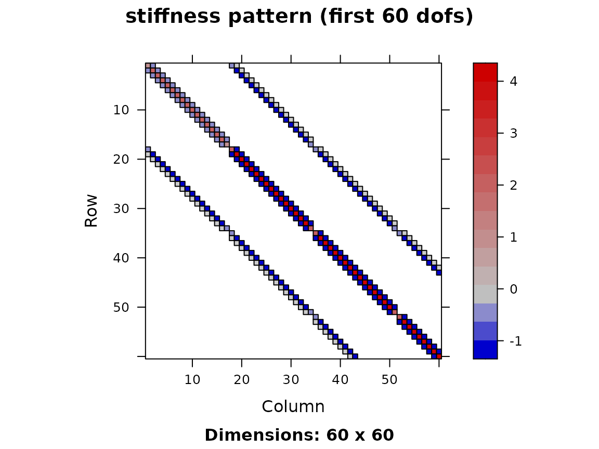

Element loops without loops
Assembly computes, for every element T and every pair of local basis functions,
A^T_{ij} = \sum_q w_q \det B_T \left[ c\,\phi_i\phi_j + \phi_i\,(b\cdot\nabla\phi_j) + \nabla\phi_i^\top D\,\nabla\phi_j \right](\hat x_q),
with i the test index (row) and
j the trial index (column). pdecompR
vectorizes over elements: the loops run over quadrature points and the
3\times3 (or 6\times6) local indices, while each operation
acts on a vector of length m (the
number of elements). The local matrices are then summed into a global
sparse matrix through triplets (I, J,
A^T_{ij}), which Matrix::sparseMatrix() accumulates
into the compressed column format.
V <- fe_space(pde_mesh_rectangle(nx = 16))
K <- assemble_matrix(V, "stiffness")
M <- assemble_matrix(V, "mass")
C <- assemble_matrix(V, "advection", c(1, 0))
class(K); dim(K); nnzero(K)
#> [1] "dgCMatrix"
#> attr(,"package")
#> [1] "Matrix"
#> [1] 289 289
#> [1] 1377The structure reflects the mesh connectivity:
image(K[1:60, 1:60], main = "stiffness pattern (first 60 dofs)")
Properties worth checking
max(abs(K %*% rep(1, V$ndof))) # constants are in the kernel of K
#> [1] 0
sum(M) # 1' M 1 is the area
#> [1] 1
isSymmetric(K); isSymmetric(M)
#> [1] TRUE
#> [1] TRUE
range(eigen(as.matrix(M), only.values = TRUE)$values)
#> [1] 0.0002663858 0.0038627258The stiffness matrix with Dirichlet rows and columns removed is symmetric positive definite; the advection matrix is not symmetric.
Load vectors and boundary terms
b <- assemble_vector(V, function(x, y) x * y)
sum(b) # int x y = 1/4
#> [1] 0.25
sum(assemble_boundary_vector(V, 1, "left")) # length of the left edge
#> [1] 1Invariance under renumbering
Assembly does not depend on the order of nodes: renumbering the nodes permutes the matrix.
m <- pde_mesh_rectangle(nx = 4)
perm <- sample(nrow(m$nodes)); inv <- order(perm)
m2 <- pde_mesh(m$nodes[perm, ], matrix(inv[m$triangles], ncol = 3))
K1 <- as.matrix(assemble_matrix(fe_space(m), "stiffness"))
K2 <- as.matrix(assemble_matrix(fe_space(m2), "stiffness"))
max(abs(K2 - K1[perm, perm]))
#> [1] 0Linear solvers
solve_linear_system() chooses sparse Cholesky for
symmetric matrices (with a fallback to sparse LU when the matrix is not
positive definite) and sparse LU otherwise. Preconditioned conjugate
gradients, BiCGSTAB and restarted GMRES are also available.
A <- K + M
rhs <- assemble_vector(V, 1)
for (m in c("auto", "lu", "cg", "bicgstab", "gmres")) {
s <- solve_linear_system(A, rhs, method = m, tol = 1e-12)
cat(sprintf("%-8s %-9s iterations %4s relative residual %.2e\n", m, s$info$method,
s$info$iterations, s$info$relative_residual))
}
#> auto cholesky iterations NA relative residual 1.82e-13
#> lu lu iterations NA relative residual 1.77e-13
#> cg cg iterations 54 relative residual 4.51e-13
#> bicgstab bicgstab iterations 43 relative residual 5.04e-13
#> gmres gmres iterations 54 relative residual 8.66e-13Every solve reports a status, the residual and its relative size, the
iteration count, the matrix size and the number of nonzeros. Iterative
methods report "not converged" instead of returning
silently:
solve_linear_system(A, rhs, method = "cg", maxit = 3)$info$status
#> [1] "not converged"For repeated solves with the same matrix (time stepping),
linear_solver() factors once and returns a reusable
solve() function.
Cost
Assembly is linear in the number of elements, and so is the memory of the sparse matrices. The supernodal Cholesky factorization of two-dimensional finite-element matrices costs roughly O(N^{1.5}) operations with fill reducing orderings, which keeps meshes with 10^5 to 10^6 unknowns practical on a workstation.
for (n in c(16, 32, 64)) {
mesh <- pde_mesh_rectangle(nx = n)
t <- system.time(s <- solve_pde(poisson_problem(mesh, source = 1, boundary = dirichlet_bc(0))))
cat(sprintf("n = %3d dofs = %6d assembly %.2fs solve %.2fs\n", n, s$space$ndof,
s$diagnostics$assembly_time, s$diagnostics$solve_time))
}
#> n = 16 dofs = 289 assembly 0.00s solve 0.00s
#> n = 32 dofs = 1089 assembly 0.00s solve 0.00s
#> n = 64 dofs = 4225 assembly 0.01s solve 0.00s